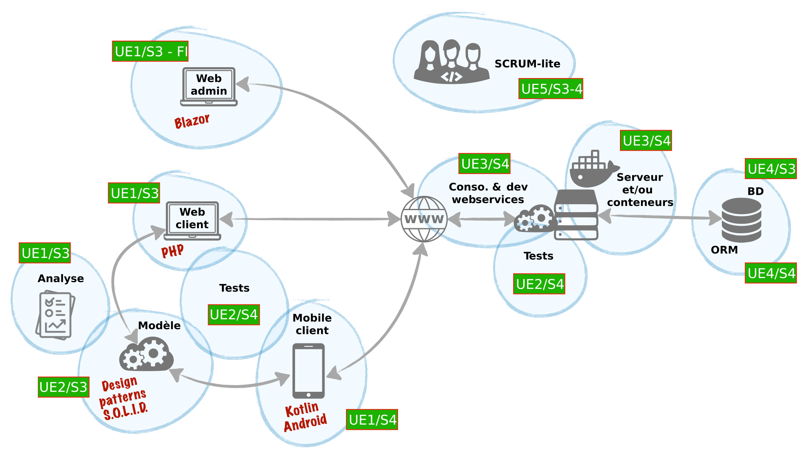

Réalisation - 165 heures
Dans le cadre de mon BUT, j'ai réalisé cette SAE 2A afin de mettre en œuvre et d'approfondir mes compétences en développement d'applications et en gestion de projets informatiques. Ce projet m'a permis de travailler sur plusieurs technologies (PHP, Blazor, Kotlin, Entity Framework & Web API) dans un but : concevoir des outils permettant de gérer et communiquer sur les repas et les allergènes des enfants de l'utilisateur avec leur crèche.
Le projet SAE 2A se décline en plusieurs parties complémentaires :
• Une application web en PHP (qui constitue la base et permet une première gestion des repas et allergènes, ainsi qu'une communication basique avec la crèche).
• Une application d'administration en Blazor pour mieux gérer la base de données et calculer des statistiques en fonction du contenu de la base grâce à une interface moderne.
• Une application mobile en Kotlin qui offre une expérience intuitive sur smartphone.
• Un service web et API utilisant Entity Framework pour relier et centraliser les données, avec l'implémentation de patterns tels que UnitOfWork et GenericRepository.
J'ai commencé par analyser les besoins de ma cliente (jouée par une professeure de l'IUT) afin de mieux comprendre son besoin pour le projet. Pour ce faire, des réunions ont été organisées avec le reste de mon équipe afin de lui présenter des schémas, maquettes, use cases et discuter des fonctionnalités essentielles.
J'ai développé une application web en PHP qui permet de gérer les repas et les allergènes des enfants, ainsi que de communiquer avec la crèche sur les plats du jour. Cette application, rendue en premier, sert de base pour l'application mobile.
L'application mobile se base sur l'application web présentée plus haut. Elle a été développée en Kotlin pour Android, offrant une expérience intuitive sur smartphone.
J'ai initié la mise en place d'un service web/API RESTful, utilisant Entity Framework pour assurer la communication entre l'application web et mobile. L'objectif principal était de centraliser les données pour qu'elles soient uniformes sur tous les supports.
Ce projet SAE 2A illustre ce que j'apprends au BUT : la capacité à développer des applications concrètes, à intégrer plusieurs technologies et à gérer un projet de A à Z. L'expérience acquise m'a permis de renforcer mes compétences techniques et organisationnelles.